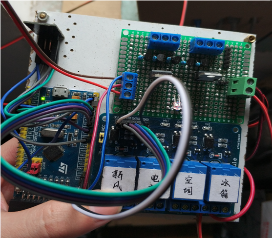
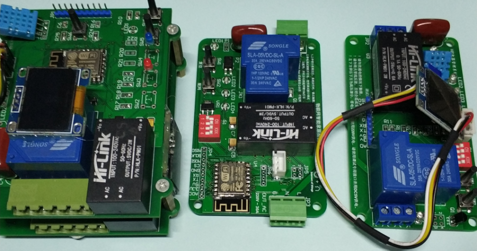
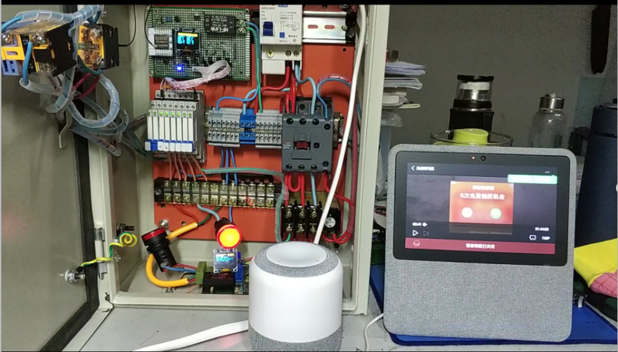

第七章 系统测试
第七章 系统测试
7.1 硬件系统测试
在完成硬件系统设计后，接着我对硬件系统做了多次测试，测试主要为检验系统稳定性、控制可靠性。
- 方案一：
STM32+ESP8266+继电器：使用STM32搭载ESP8266 wifi模块构建最小物联网控制单元，引出控制引脚与继电器模组相连实现对“STM32+ESP8266”控制方案进行实际测试，测试系统不间断运行时间，频繁发送控制指令时系统反应能力测试.
 - 方案二：
ESP8266+DHT11+HLW8032：使用ESP8266作为控制单元，搭载DHT11数字式温湿度传感器，HLW8032电量检测芯片完成测试，主要对电路板进行控制测试，以及MQTT协议上传数据测试。

ESP8266电源控制柜：二次回路以ESP8266为控制单元，使用光耦搭建继电器驱动电路，通过继电器控制一次回路的交流接触器、各房间供电支路，实现对总电源、房间电源自动化管理。主要完成对设备进行远程控制、语音控制、百度智能家居商用接口控制测试。

硬件电路测试结果：
在对方案一进行测试时，我采用了TCP、MQTT两种方式与设备云服务器进行连接，在不排除网络不稳定因素的情况下，从测试反应的速度来看，设备连接量较少时两种方式都很灵敏，若是接入的设备量增加，MQTT在指令接收方面会受到影响，存在动作迟滞的现象，分析主要原因，初步判定为硬件设备订阅了相同的主题，设备也会接收其他设备的控制指令，这些无关指令虽然不会触发设备执行控制动作，但是设备处理判别消息是需要花费时间的，数据流过大时，迟滞现象最明显，甚至会漏掉执行指令。为解决控制迟滞问题，将来可通过设计多个消息主题来对不同场合设备进行分类，减轻设备端处理无关数据带来的负担。
在对方案二进行测试时，总体表现比较满意，唯一要注意的是在软件设计过程中，合理使用内存资源，因为“ESP8266”模组本身内部就运行着Free RTOS系统占用内存资源，在程序运算量较大或临时变量存储过多时，会导致设备重启。
本博客所有文章除特别声明外，均采用 CC BY-NC-SA 4.0 许可协议。转载请注明来自 Mr.chen Blog！
相关推荐


评论